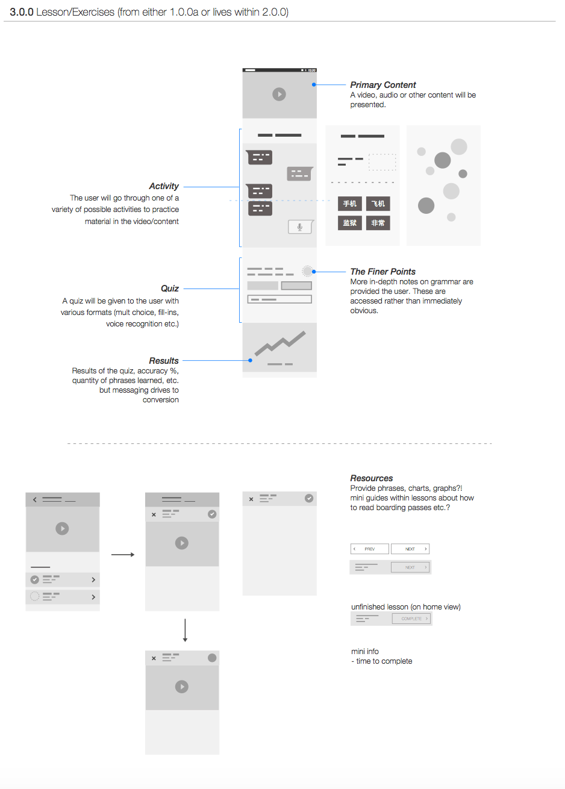
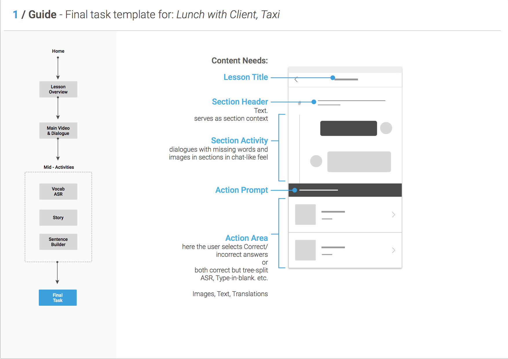
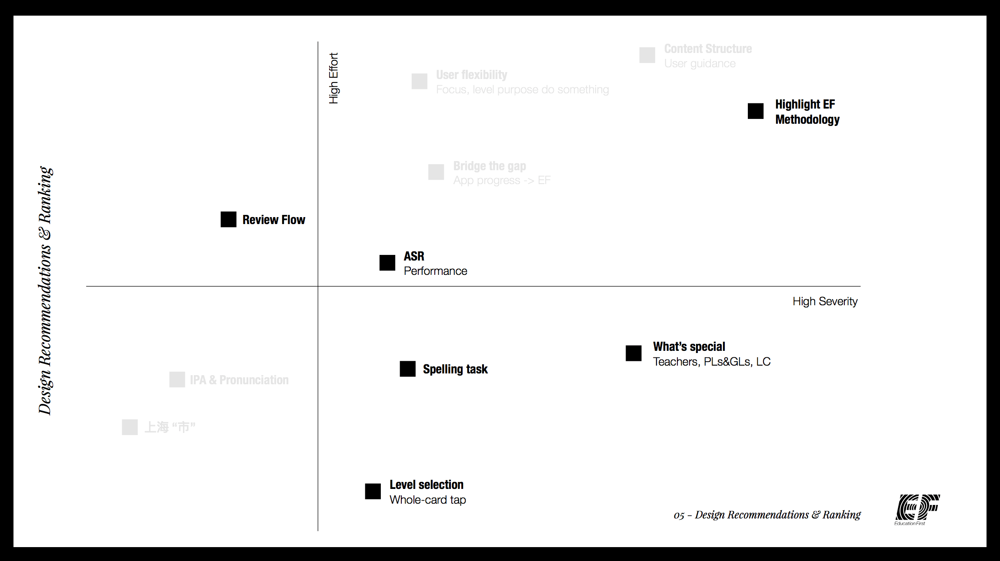
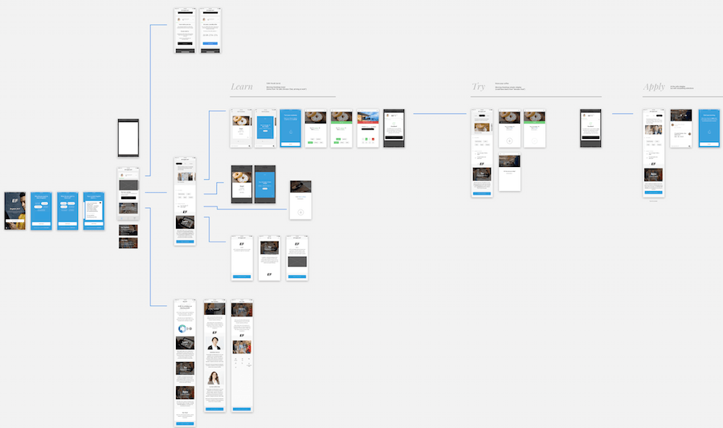

The Challenge
Create a new channel for lead generation. Foster engagement with active testing & tracking in mind to quickly pivot on user behavior, engagement and conversion insights.
The Process
Whiteboarding galore with PO & Marketing leads, and this wasn't just front-loaded into design into development. Our approach was to launch what we can as soon as possible to evaluate the effectiveness of info-gathering, content and design.
This meant there were marketers and devs with designers during whiteboarding and design presentations, and designers with marketers and devs during strategy meetings. As an example, having designers along for the filming of video roleplays allowed us to address anything amiss with either the design or how the video would be interacted with in the design on the spot.

The Win
The application was rolled-out quickly, and just as soon as it was, user data started rolling in. This afforded us insight not only to the app's performance against KPIs, but performance of individual parts along the entire leads funnel as well. This informed constant reevaluation of higher-level concepts and strategy which, paired with findings from usability studies, led to new, clearer recommendations for ways to forge ahead.
 